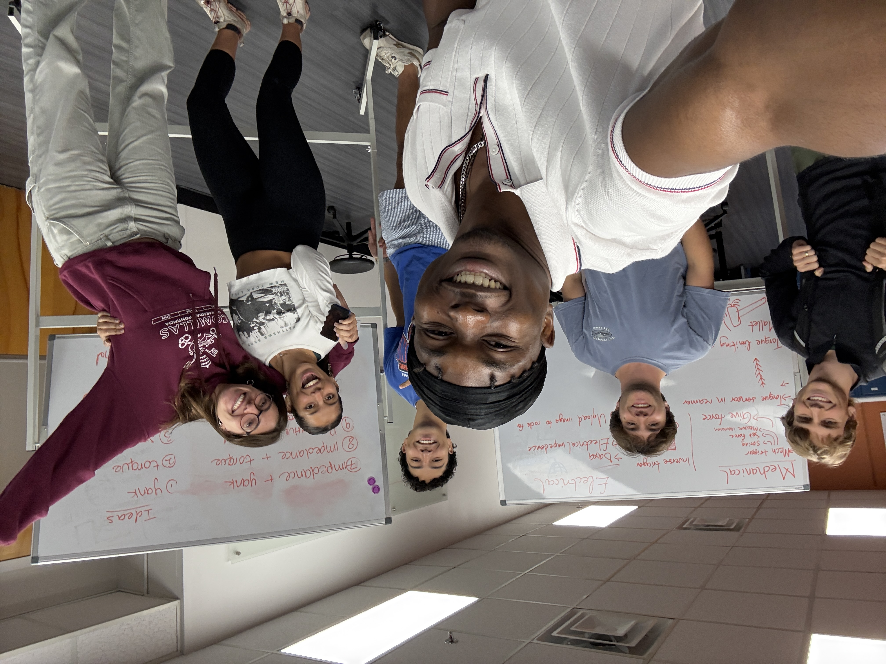
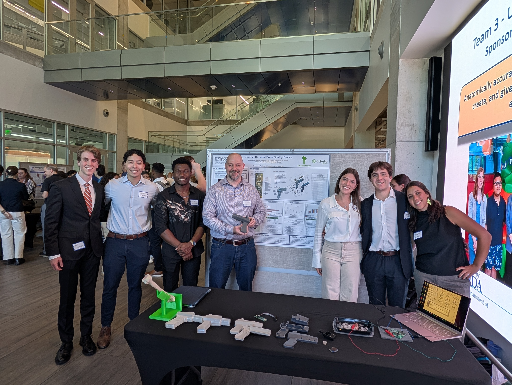

Product design
Bone Density Measurement System
A product-design case study: custom PCB layout, embedded firmware bring-up, team communication, and mechanical integration.

Product Design Lens
This project was not just a board design exercise. It asked how sensing hardware, firmware, packaging, and communication fit together in a biomedical measurement product. I worked across schematic design, PCB layout, soldering, firmware bring-up, and validation.
Build Scope
The system used an AD5941 analog front end and STM32G0 microcontroller. I wrote Embedded C for SPI, I2C, OLED output, GPIO, reset behavior, and interrupt testing, then debugged power, communication, and mixed-signal behavior during bring-up.
Team and Communication
The poster and team photos show the other side of product design: explaining the design clearly, making tradeoffs visible, and helping people understand how the electrical system fits inside a larger product concept.
CAD Credit
The ZProbe exploded CAD assembly animation and design were created by Jack Gardner.

